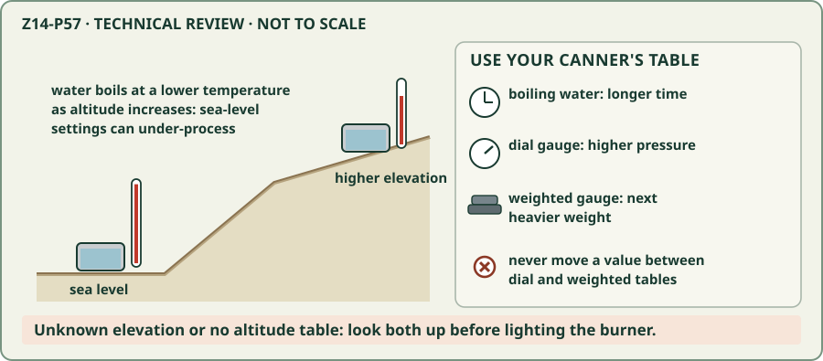

Z14-P57 · Food production and preservation · New manuscript
Apply exact local elevation altitude adjustments before canning
Compensate accurately for lower water boiling temperatures above 1,000 feet elevation—including broad portions of northern and southwestern Minnesota.
When it applies · Every boiling-water, atmospheric-steam, and pressure-canning batch nationwide and across elevated Upper Midwest counties.
Equipment · Verified local elevation (USGS topo/map or county Extension), USDA altitude tables for dial vs weighted gauges, and written batch sheet.

Actions
- Look up your EXACT home elevation BEFORE starting—water boils at lower temperatures as elevation rises, so sea-level processing times and pressures UNDER-PROCESS food above 1,000 feet (note: much of northern, central, and southwestern Minnesota sits between 1,001 and 2,000+ feet!).[P14, F07]
- Apply the exact USDA altitude adjustment for your equipment: for boiling-water canning, add extra processing minutes per the recipe's elevation bracket (1,001–3,000 ft, 3,001–6,000 ft, etc.); for pressure canning, INCREASE target pressure (e.g., dial gauge moves from 11 PSI to 12 PSI at 2,001–4,000 ft; weighted gauge steps straight from 10 PSI to 15 PSI above 1,000 ft!).[P14, P07, F07]
- Never apply a dial-gauge PSI table to a weighted-gauge canner or vice versa—verify the exact column in the current USDA/NCHFP guide every time.[P14, P07]
Failure recognition · Canning in Duluth, Bemidji, or southwestern Minnesota (elevation >1,100–1,600 ft) using sea-level weighted-gauge 10 PSI instead of the mandatory 15 PSI step.[P14, F07]
Verify · Confirm exact local elevation checked, correct equipment column (boiling-water minutes vs dial PSI vs weighted PSI) selected, and adjustment written down.[P14, F07]
Stop or change course · Unknown elevation or missing altitude-adjustment table requires looking up exact elevation and official USDA tables BEFORE lighting the burner.[P14, F07]
Evidence and editorial notes
- F07 · NCHFP · Ensuring Safe Canned Foods (online reference)
- Section: Ensuring safe canned foods > Altitude effects · Conditions: Tested recipe at the actual processing elevation
Support: Adjust processing according to the recipe and altitude tables. A change of ingredient or jar size needs a tested recipe that covers it.
Limitations: Dial-gauge pressure canners require periodic accuracy testing. · Conflicting evidence: None; retained for Z14 reconstruction.
Editorial note: Maintains five-pack integrity. · Specialist reviewer: Food preservation and public health
Primary source · checked 2026-11-24 - P07 · NCHFP · Using Pressure Canners (current web edition)
- Section: Using Pressure Canners > Low-Acid Foods, Venting, and Gauge Accuracy · Conditions: Low-acid foods (pH > 4.6: meats, poultry, seafood, most vegetables, soups)
Support: Process all low-acid foods strictly in a validated pressure canner (NOT a boiling-water canner, electric multicooker unless independently validated, or oven), vent steam steadily for 10 full minutes before pressurizing, maintain target pressure for the full altitude-adjusted time, and test dial gauges annually.
Limitations: Dropping pressure mid-cycle requires bringing pressure back up and restarting the entire processing timer from zero. · Conflicting evidence: Refutes myths that prolonged boiling-water processing destroys C. botulinum spores.
Editorial note: Core low-acid botulism-prevention boundary in Z14. · Specialist reviewer: Food microbiology and Extension preservation specialist
Primary source · checked 2026-11-24 - P14 · University of Minnesota Extension · Preserving and Preparing Food Safely (current web edition)
- Section: Altitude Adjustments, Dial-Gauge Testing, and Extension Verification · Conditions: Upper Midwest and elevated U.S. locations (above 1,000 feet elevation)
Support: Determine exact local elevation before canning (much of northern and southwestern Minnesota exceeds 1,000 feet), apply USDA altitude increases to boiling-water times or pressure-canner PSI, and use county Extension offices to verify dial gauges and recipes.
Limitations: Water boils at lower temperatures as elevation rises, causing under-processing if sea-level times or pressures are used above 1,000 feet. · Conflicting evidence: None; highlights Minnesota elevations exceeding 1,000 ft where adjustments apply.
Editorial note: Connects local elevation checks directly to Z14 canning protocols. · Specialist reviewer: University Extension food safety specialist
Primary source · checked 2026-11-24
Source lineage · UMN Extension and NCHFP Altitude Tables; new manuscript · Classification · New manuscript.